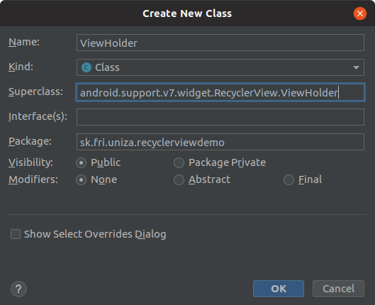
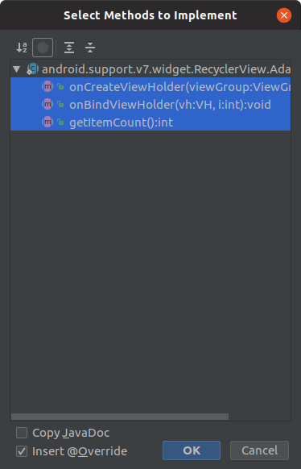

Kľučové kroky:¶
Použitie RecyclerView má nasledujúce kľúčové kroky:
-
Pridajte podpornú knižnicu RecyclerView do súboru
build.gradle (module) -
Definujte triedu model, ktorá bude použitá ako zdroj údajov
-
Pridajte do svojej aktivity RecyclerView
-
Vytvorte si vlastný XML layout súbor ako má vyzerať riadok na zobrazenie jednej položky
-
Vytvorte
RecyclerView.AdapteraViewHolderna vykreslenie položky -
Pripojte adaptér so zdrojom údajov a nasledne ho odovzdejte RecyclerView
1. Pridanie support knižnice¶
app/build.gradle
1 2 3 4 5 6 7 8 9 | dependencies {
...
implementation 'com.android.support:cardview-v7:28.0.0'
implementation 'com.android.support:support-v4:28.0.0'
testImplementation 'junit:junit:4.12'
androidTestImplementation 'com.android.support.test:runner:1.0.2'
androidTestImplementation 'com.android.support.test.espresso:espresso-core:3.0.2'
+ implementation 'com.android.support:recyclerview-v7:28.0.0'
}
|
2. Definovanie modelu¶
Model je vytvorený v súbore model/Recipe.java
1 2 3 4 5 6 7 8 9 10 11 12 13 14 15 16 17 18 19 20 21 22 23 24 25 26 27 28 29 30 31 32 33 34 35 36 37 38 39 40 41 42 43 44 45 46 47 48 49 50 51 52 | public class Recipe { @JsonIgnore private static Context contex = null; @JsonProperty("title") public String title; @JsonProperty("ingredients") public List<String> ingredients = null; @JsonProperty("detail") public String detail; @JsonProperty("image_url") public String imageUrl; @JsonIgnore private Map<String, Object> additionalProperties = new HashMap<String, Object>(); @JsonAnyGetter public Map<String, Object> getAdditionalProperties() { return this.additionalProperties; } @JsonAnySetter public void setAdditionalProperty(String name, Object value) { this.additionalProperties.put(name, value); } @JsonIgnore public static void setContext(Context appcontext) { contex = appcontext; } @JsonIgnore public Bitmap getBitmapFromAsset() { assert contex != null; return getBitmapFromAsset(contex); } @JsonIgnore public Bitmap getBitmapFromAsset(Context context) { AssetManager assetManager = context.getAssets(); InputStream istr; Bitmap bitmap = null; try { istr = assetManager.open(imageUrl); bitmap = BitmapFactory.decodeStream(istr); } catch (IOException e) { e.printStackTrace(); } return bitmap; } } |
3. Vytvorenie RecyclerView v ramci layout súbora¶
V súbore ./main/res/layout/recycler_list_layout.xml vytvorte RecyclerView
1 2 3 4 5 6 7 8 9 | <?xml version="1.0" encoding="utf-8"?> <android.support.v7.widget.RecyclerView xmlns:android="http://schemas.android.com/apk/res/android" xmlns:tools="http://schemas.android.com/tools" android:id="@+id/listRecyclerView" android:layout_width="match_parent" android:layout_height="match_parent" android:layout_marginStart="0dp" android:layout_marginEnd="2dp" tools:listitem="@layout/fragment_recipe_item" /> |
4. Vytvorenie rozloženia jedného riadku¶
Tento layout súbor môže byť vytvorený v /res/layout/fragment_recipe_item.xml a bude vykreslený pre každý riadok.
1 2 3 4 5 6 7 8 9 10 11 12 13 14 15 16 17 18 19 20 21 22 23 24 25 26 27 28 29 30 | <?xml version="1.0" encoding="utf-8"?> <LinearLayout xmlns:android="http://schemas.android.com/apk/res/android" xmlns:tools="http://schemas.android.com/tools" android:layout_width="match_parent" android:layout_height="wrap_content" android:clickable="true" android:focusable="true" android:foreground="?android:attr/selectableItemBackground" android:orientation="vertical"> <ImageView android:id="@+id/smallImage" android:layout_width="42dp" android:layout_height="42dp" android:layout_gravity="center" android:scaleType="centerCrop" android:textAppearance="?attr/textAppearanceListItem" tools:srcCompat="@mipmap/ic_launcher" /> <TextView android:id="@+id/contentTxt" android:layout_width="wrap_content" android:layout_height="wrap_content" android:layout_gravity="center" android:layout_marginTop="2dp" android:gravity="center" android:textAppearance="?attr/textAppearanceListItem" tools:text="recept xy" /> </LinearLayout> |
5. Vytvorenie RecyclerView adaptéra¶
Pred samotným vytvorením RecyclerView adaptéra je potrebné vytvoriť pomocnú triedu ViewHolder.
5.1 Trieda ViewHolder¶
Vytvorte nový triedu Viewholder , ktorá je potomkom RecylerView.Vieholder

Info
ViewHolder trieda môže byť implementovaná ako vnorená trieda priamo v triedeMyRecipeRecyclerViewAdapter
Viewholder zasobník UI komponentov
Upravte ViewHolder triedu tak aby našla a držala inštancie UI objektov, ktoré reprezentujú riadok RecyclerView. Jeden riadok je reprezentovaný layout súborom, napr. /layout/fragment_recipe_item.xml
Súbor ViewHolder.java
1 2 3 4 5 6 7 8 9 10 11 12 | public class ViewHolder extends RecyclerView.ViewHolder { ImageView smallImageView; TextView contentText; public ViewHolder(@NonNull View itemView) { super(itemView); contentText = itemView.findViewById(R.id.contentTxt); smallImageView = itemView.findViewById(R.id.smallImage); } } |
5.2 Trieda MyRecipeRecyclerViewAdapter¶
Vytvorte novú triedu MyRecipeRecyclerViewAdapter, ktorá je potomkom RecyclerView.Adapter<ViewHolder>

Naimplementuj nasledovné metódy

Súbor MyRecipeRecyclerViewAdapter.java
1 2 3 4 5 6 7 8 9 10 11 12 13 14 15 16 17 18 19 20 21 22 23 | package sk.fri.uniza.recyclerviewdemo; import android.support.annotation.NonNull; import android.support.v7.widget.RecyclerView; import android.view.ViewGroup; public class MyRecipeRecyclerViewAdapter extends RecyclerView.Adapter<ViewHolder> { @NonNull @Override public ViewHolder onCreateViewHolder(@NonNull ViewGroup viewGroup, int i) { return null; } @Override public void onBindViewHolder(@NonNull ViewHolder viewHolder, int i) { } @Override public int getItemCount() { return 0; } } |
5.3 Získanie a uloženie zoznamu receptov¶
Pridajte do triedy MyRecipeRecyclerViewAdapternový privátny atribút typu List<Recipe> recipes a následne ho inicializujte ako parameter konštruktora.
1 2 3 4 5 6 7 8 9 10 11 12 13 | public class MyRecipeRecyclerViewAdapter extends RecyclerView.Adapter<ViewHolder> { private final List<Recipe> recipes; public MyRecipeRecyclerViewAdapter(List<Recipe> recipes) { this.recipes = recipes; } // Vrátenie veľkosti datasetu @Override public int getItemCount() { return recipes.size(); } ... |
5.4 Vytvorenie UI zobrazeného riadku¶
Užitvateľské rozhranie jedného riadku sa vytvára v metóde onCreateViewHolder za pomoci LayoutInflaterapi. Následne, vytvorené rozhranie sa odovzdá do novo vytvoreného objektu ViewHolder, ktorý má za úlohu nájsť a udržiavať inštantcie jednotlivých prkov, ktoré tvoria jeden riadok. Vytvorený objekt ViewHolder sa odovzdá a daľej ho už spravuje adaptér recyclerview.
1 2 3 4 5 6 | @NonNull @Override public ViewHolder onCreateViewHolder(@NonNull ViewGroup viewGroup, int i) { View view = LayoutInflater.from(viewGroup.getContext()).inflate(R.layout.fragment_recipe_item, viewGroup, false); return new ViewHolder(view); } |
5.5 Prepojenie UI s dátami z modelu¶
1 2 3 4 5 | @Override public void onBindViewHolder(@NonNull ViewHolder viewHolder, int i) { viewHolder.contentText.setText(recipes.get(i).title); viewHolder.smallImageView.setImageBitmap(recipes.get(i).getBitmapFromAsset()); } |
6. Prepojenie adaptéra s RecyclerView¶
Súbor MainActivity.java
1 2 3 4 5 6 7 8 9 10 11 12 13 14 15 16 17 18 19 20 21 22 23 24 25 26 | public class MainActivity extends AppCompatActivity { @Override protected void onCreate(Bundle savedInstanceState) { super.onCreate(savedInstanceState); setContentView(R.layout.recycler_list_layout); RecyclerView recyclerView = findViewById(R.id.listRecyclerView); // use this setting to improve performance if you know that changes // in content do not change the layout size of the RecyclerView recyclerView.setHasFixedSize(true); // use a linear layout manager RecyclerView.LayoutManager layoutManager = new LinearLayoutManager(this); recyclerView.setLayoutManager(layoutManager); // specify an adapter (see also next example) MyRecipeRecyclerViewAdapter mAdapter = new MyRecipeRecyclerViewAdapter(RecipesDataSet.getRecipes(this)); recyclerView.setAdapter(mAdapter); } } |
Hotovo - Spustenie aplikácie¶
Spustite aplikáciu, aplikácia zobrazí zoznam receptov.